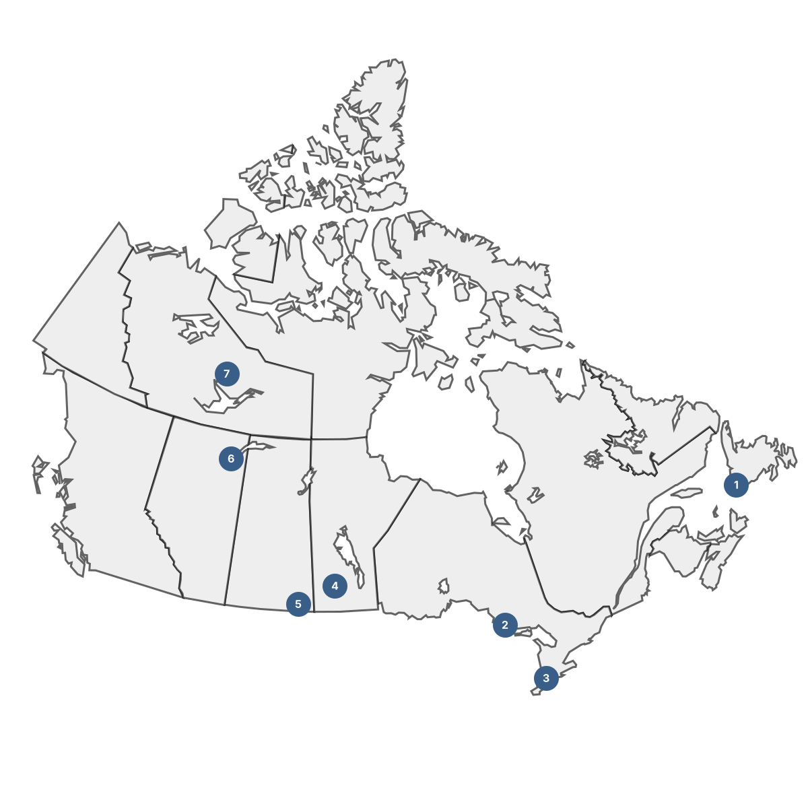

Using the IRPP's community susceptibility methodology, 68 census divisions across Canada were identified
as facing elevated risk of workforce disruption from the transition to a net-zero economy.
Seven were selected as the focus of this study, representing a diverse cross-section of regions and economic profiles.

1
Division No. 3, NL — Maritime transport
Local economy: Healthcare, agriculture/fishing, transport
Major centres: Channel-Port aux Basques
2
Algoma, ON — Steel manufacturing
Local economy: Healthcare, retail, manufacturing
Major centres: Sault Ste. Marie, Elliot Lake, Blind River